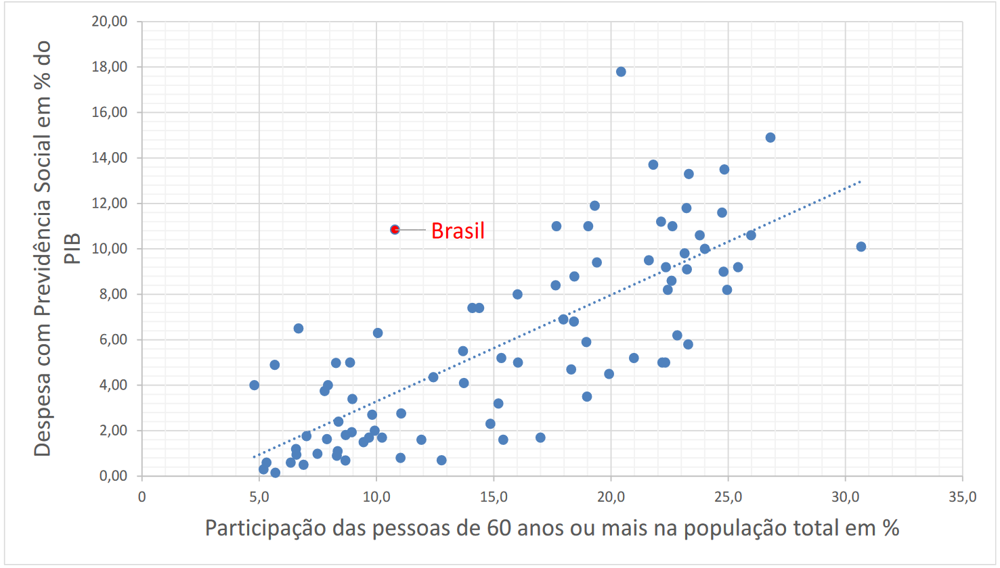
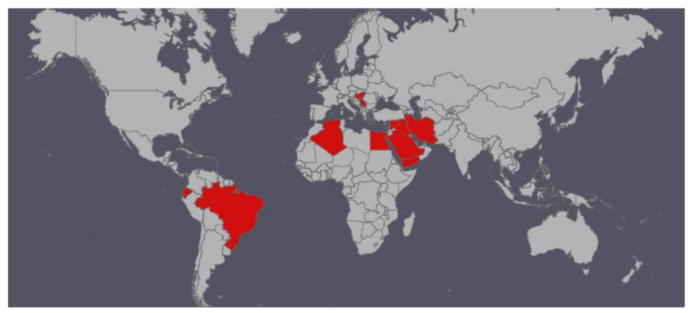

DEFICITÔMETRO
Déficit da Previdência em 2019 até agora:
Este valor equivale a:
Déficit acumulado segmentado por setor:
Déficit acumulado segmentado por setor, por beneficiado:
Expectativa de vida após os 60 anos, por região:
Despesa previdenciária versus idade da população em 86 países:
Países sem idade mínima para aposentadoria:
Referências:
Metodologia:
O déficit calculado é o valor do déficit estimado na LOA [1], proporcional ao número de segundos transcorridos. Já a segmentação é proporcional aos valores do relatório do IFI [2]. O restante dos valores advém das referências [3] a [18]